Finding Conspirators in the Network:
Machine Learning with Resource-allocation Dynamics
Problem clarification
 |
A conspiracy network is embedded into a network of communication among employees of a company, with its every edge representing a message sent from one node to the other and categorized by topics. Given a few known criminals, non-criminals and suspicious topics, we seek to estimate the probability of criminal involvement for those not identified individuals, and to determine the leader of conspirators. See also: |
Assumptions
We made following assumptions for solving the problem:
Two classes, conspirators and non-conspirators, are linearly separable in the space spanned by local features of a node, which is necessary to logistic regression.
A conspirator is reluctant to mention topics related to crime when talking with an outsider.
Conspirators tend not to talk about irrelevant topics frequently with each other.
The leader of conspiracy tries to minimize risk by restricting direct contacts.
A non-conspirator has no idea of who are conspirators, thus treating conspirator and non-conspirators equally.
Logistic regression model
We consider a training set of size : 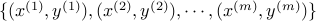, where
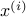 is an n-dimensional feature vector, and  indicates the classification of the agent, i.e. 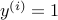 for conspirators and 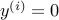 for non-conspirators. All the nodes in the training set are drawn from the known conspirators and non-conspirators.
indicates the classification of the agent, i.e. 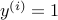 for conspirators and 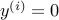 for non-conspirators. All the nodes in the training set are drawn from the known conspirators and non-conspirators.
As a descendant of generalized linear model for Bernoulli distribution, logistic regression tries to estimate the probability of being a conspirators as

where 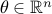 is the parameter vector.
Feature selection
Topological features
| 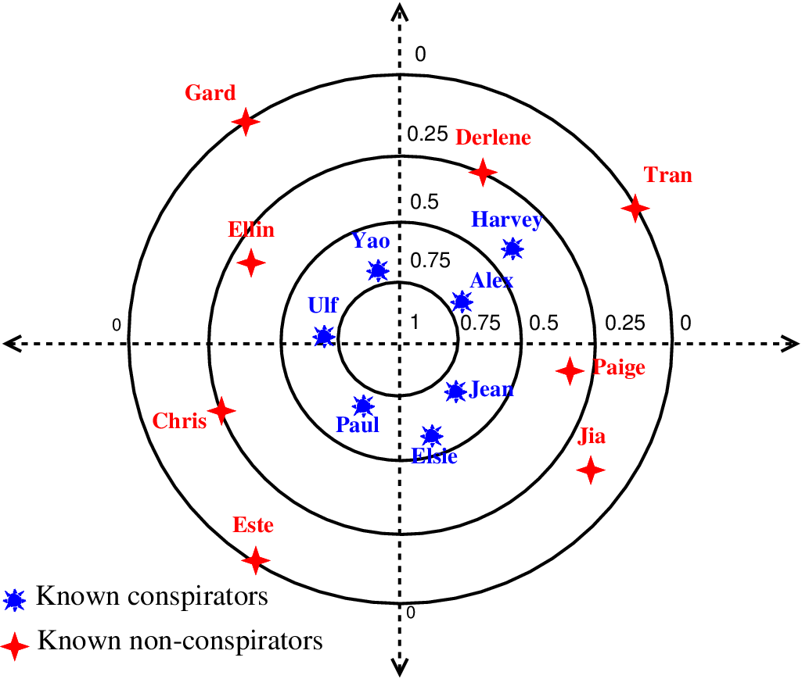 |
|
Semantic features and resource-allocation dynamics
| 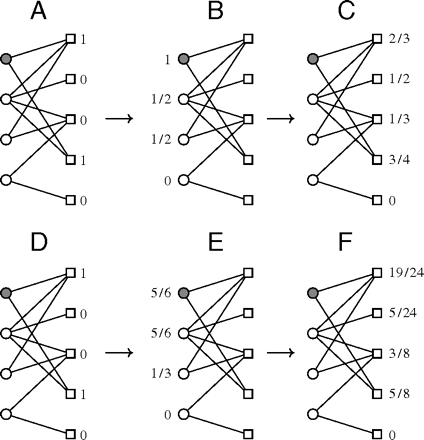 | The bipartite network is modeled by . is an edge set, indicating the relationship between key word set 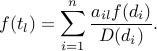
Equation above expresses the calculation of the resource held by 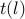 after the first step : 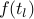. 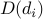 indicates the degree of the node and 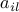 is defined as follows: 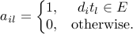
Intuitive explanation of step 1 is to arrange the resource averagely by degree of from 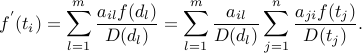
After this two-fold method, the amount of resource held by every element in References: |
 of expert dictionary and topic set
of expert dictionary and topic set  , where 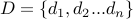 and
, where 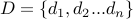 and  . Then, we arrange all the topics with 0 resource except each known conspiratorial topic with one unit of resource and commence with the first allocation from set
. Then, we arrange all the topics with 0 resource except each known conspiratorial topic with one unit of resource and commence with the first allocation from set Evaluation
Sensitivity analysis
| 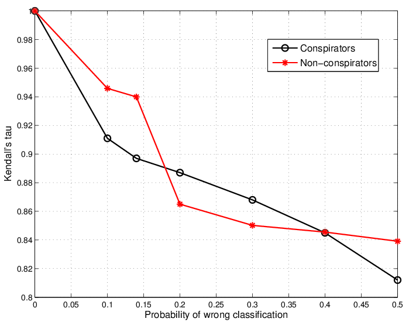 | Considering the usual incompleteness, imprecision and even inconsistency with criminal social networks, the method for inferring criminality or conspiracy should be robust enough to cope with minor alternations of the network. Otherwise, small flaws or incompleteness of the network would possibly lead to mistaken accusations or connivance of criminals. Therefore, a sensitivity analysis is performed for our approach. If we assume those known conspirators and non-conspirators are independently wrongly classified with certain probability, then the expected value of |
 between our computed priority list and the real priority list would vary with that probability. The left figure depicts the expected Kendall's tau versus the misclassification probability of conspirator set and non-conspiracy set separately.
between our computed priority list and the real priority list would vary with that probability. The left figure depicts the expected Kendall's tau versus the misclassification probability of conspirator set and non-conspiracy set separately.Empirical support
| 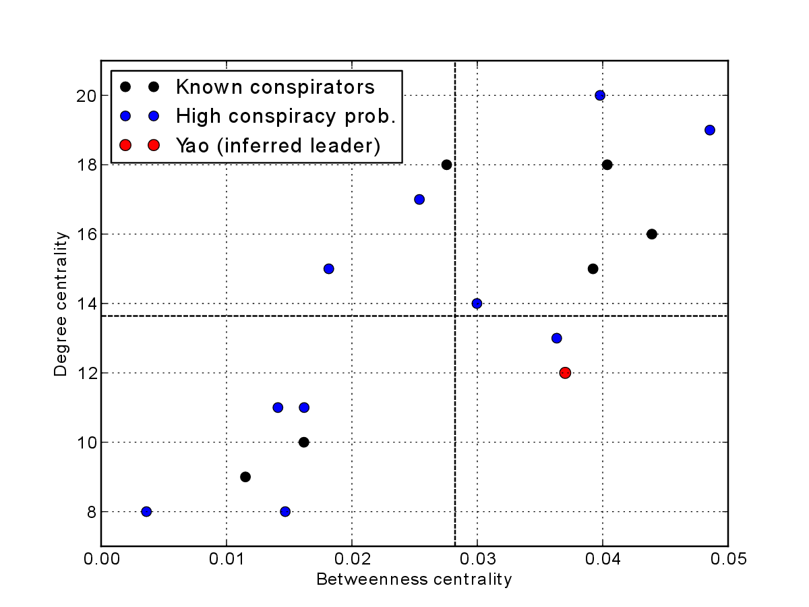 | Our inference that Yao is the leader is empirically supported. Empirical analysis of criminal networks has found that a leader of a criminal organization tends to carefully balancing his or her degree centrality and betweenness centrality. It has been proposed that the leader usually maintains a high betweenness centrality but a relatively low degree centrality, for enhancing efficiency and meanwhile ensuring safety. References: |
Complete solution
Please refer to our paper:
Fangjian Guo, Jiang Su, and Jian Gao. Finding conspirators in the network via machine learning. The UMAP Journal, 33(3), 2012.